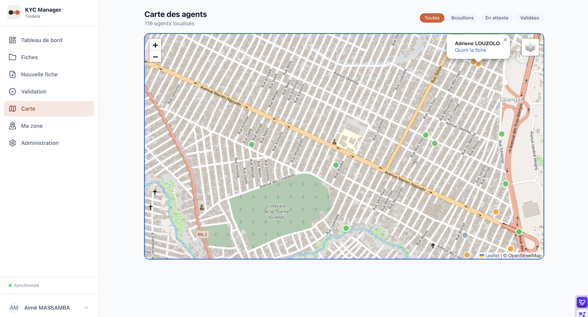
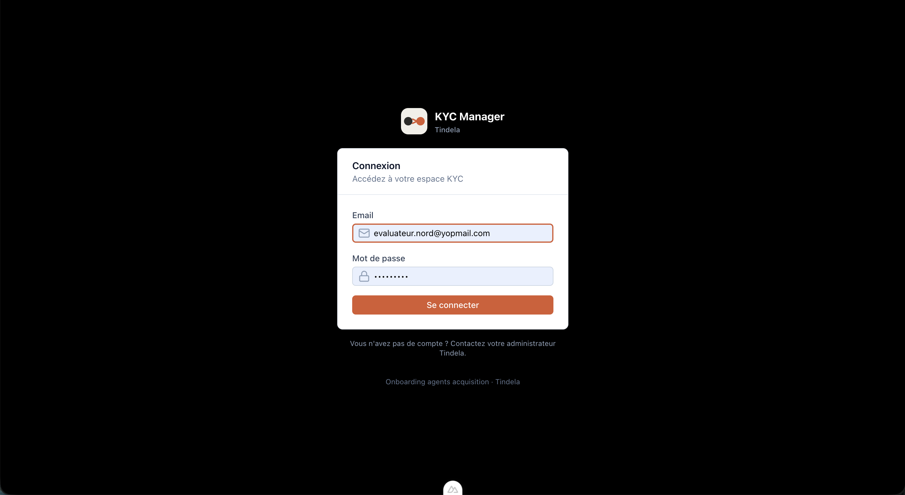
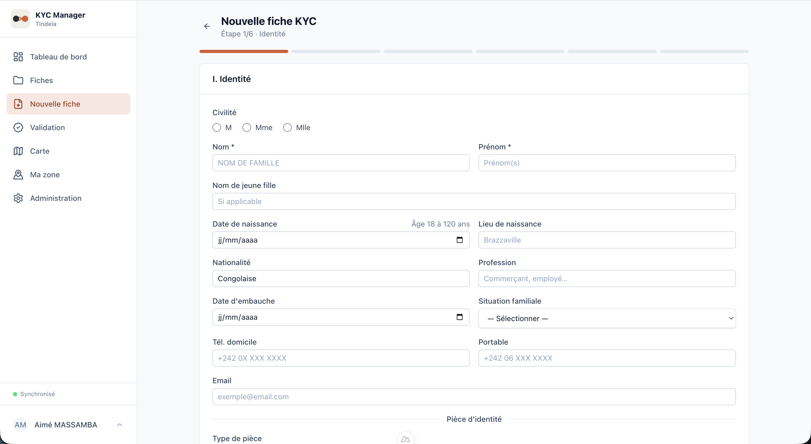
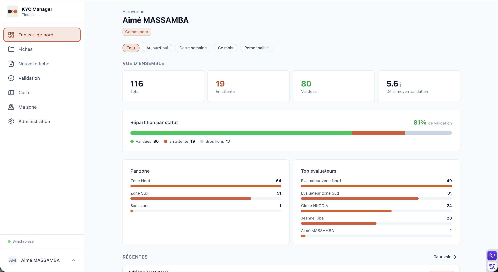
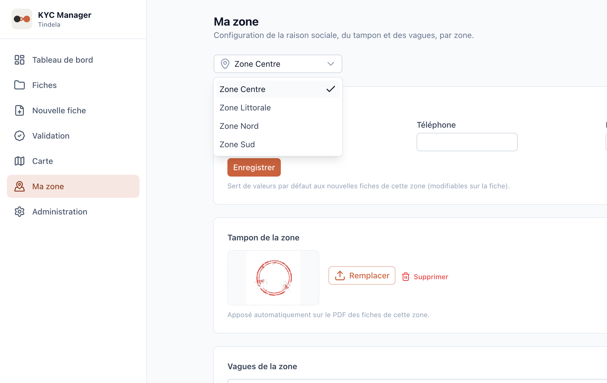
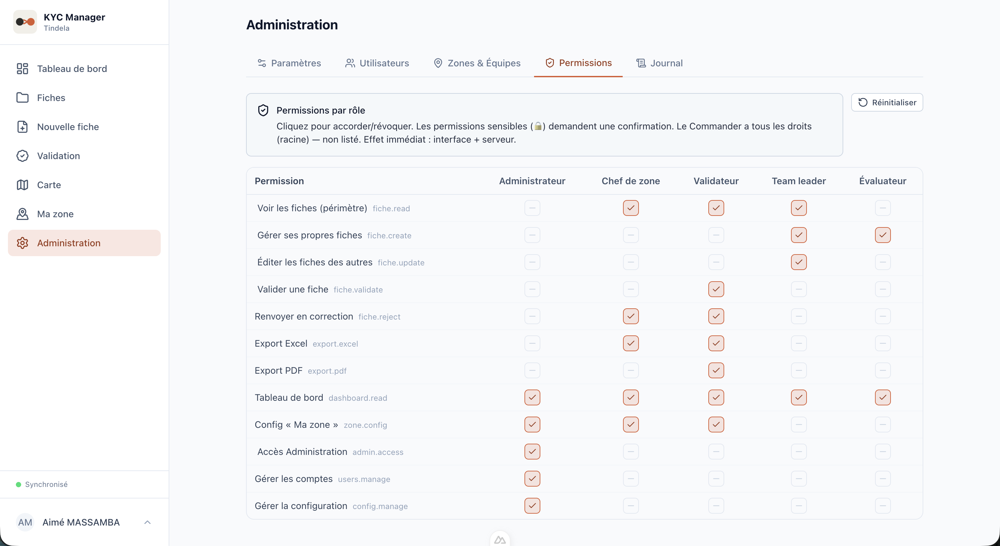
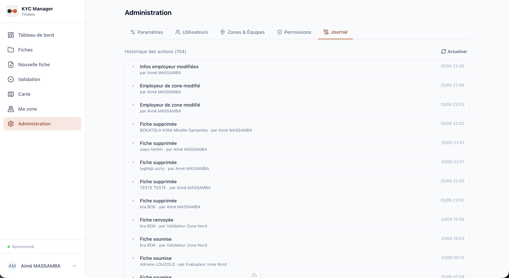

An offline-first PWA digitizing KYC onboarding for mPOS agents in Brazzaville.
Tindela is a fintech operating across four zones in Brazzaville (Centre, Littorale, Nord, Sud). Each zone is run by its own independent distributor, responsible for onboarding the mPOS agents (the merchants who accept the mobile payment terminals) in their zone.
Until now, onboarding meant a paper form. Slow to fill out, hard to read, easy to lose, painful to consolidate, and almost impossible to audit. For a regulated financial product, that's a real liability.
The platform replaces paper with a structured digital file: entered once, controlled, validated, and automatically rendered into the official KYC PDF and the consolidated Excel base. With full traceability of who did what, when.
Everything works without a network: capture, edits, photos, signatures. Local Dexie store, sync queue, optimistic concurrency. A stuck file is flagged, never silently lost.
A file can be shared with a teammate (the creator stays accountable). Team leads can edit any non-validated file in their team. Conflict guards prevent overwrites.
One-tap GPS capture, adjustable on a map (street / satellite, free tiles). Each supervisor sees their agents on a territorial map, scoped to their perimeter.
A faithful recreation of the official KYC PDF (identity, engagement, letter, stamps, signatures) via pdf-lib. Consolidated Excel base (numbering, waves) via write-excel-file.
The data layer is deliberately isolated. The Pinia stores never talk to Supabase directly; they go through a repository pattern. That means we can swap Supabase for a custom REST backend in v2 without touching the pages or stores. Local-first is the foundation; cloud is just one transport.







The demo runs the full role hierarchy with seed data. Request access; I'll send credentials scoped to a test account.